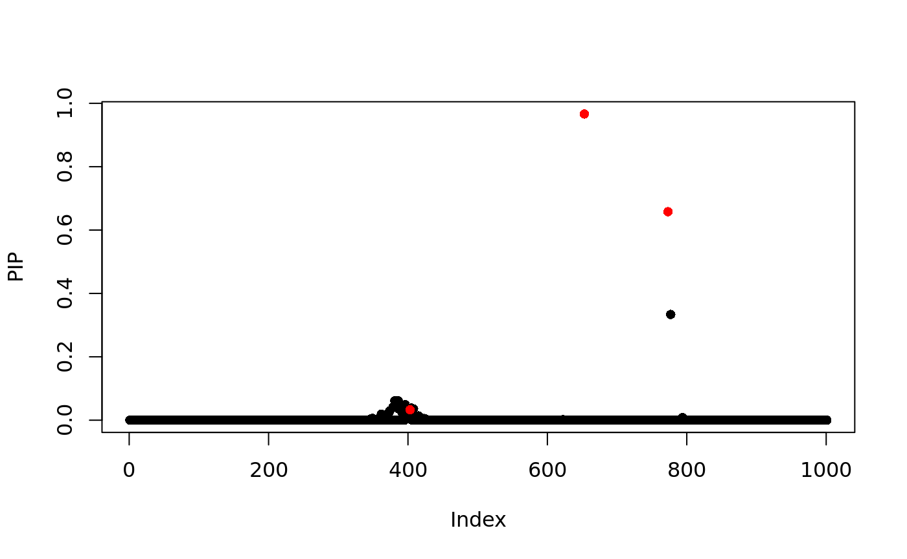
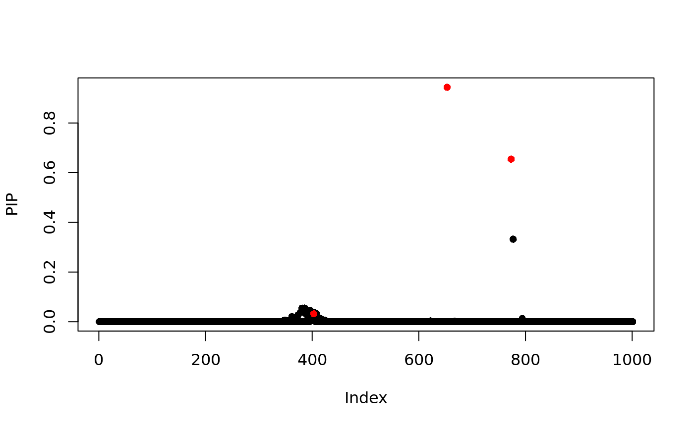
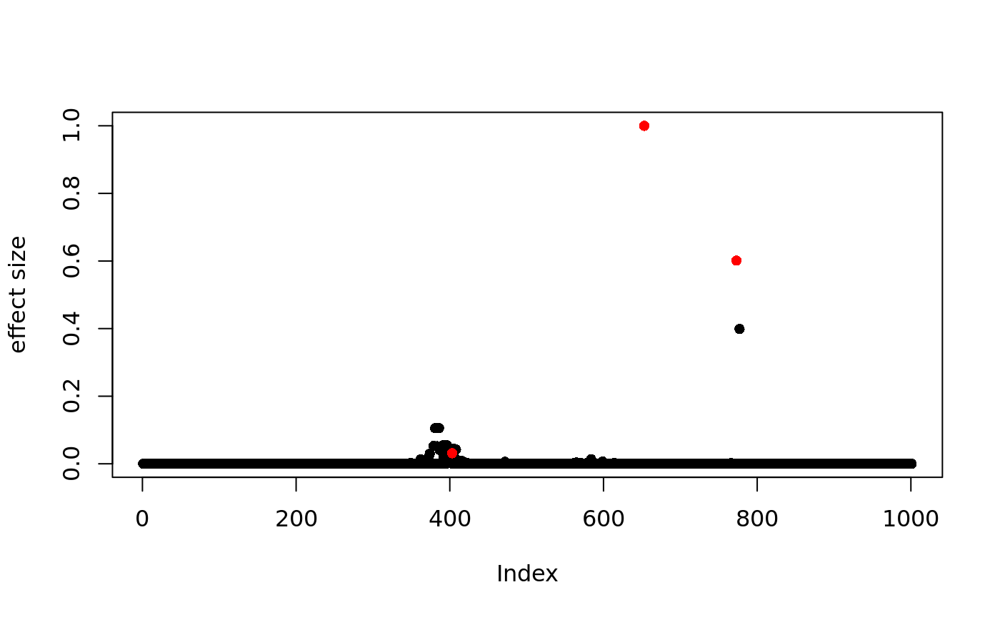

Fine-mapping examples
Gao Wang
June 26, 2018
finemapping.Rmd
Fine-mapping with susieR and others
This vignettes demonstrates susieR in the context of genetic fine-mapping. We use simulated data of expression level of a gene (\(y\)) in \(N \approx 600\) individuals. We want to identify with the genotype matrix \(X_{N\times P}\) (\(P=1000\)) the genetic variables that causes changes in expression level.
The simulated data-set is available here, as part of the susieR package. It is a simulate to have exactly 3 non-zero effects.
The data-set
## [1] "data" "sumstats"data contains regression data-set \(X\) and \(y\), along with some other relevant properties in the context of genetic studies. It also contains the “true” regression coefficent the data is simulated from.
## [1] "X" "chrom" "pos"
## [4] "true_coef" "residual_variance" "Y"
## [7] "allele_freq" "V"Notice that we’ve simulated 2 sets of \(Y\) as 2 simulation replicates. Here we’ll focus on the first data-set.
## [1] 574 2Here are the 3 “true” signals in the first data-set:

## [1] 403 653 773So the underlying causal variables are 403, 653 and 773.
Simple regression summary statistics
The data-set additionally provides summary statistics for fitting univariate simple regression variable by variable. The results are \(\hat{\beta}\) and \(SE(\hat{\beta})\) from which z-scores can be derived. Again we focus only on results from the first data-set:
z_scores = dat$sumstats[1,,] / dat$sumstats[2,,]
z_scores = z_scores[,1]
plot(z_scores, pch=16)
points(signal_index, z_scores[signal_index], col = "red", pch = 16)
Fine-mapping with susieR
For starters, we assume there are at most 5 causal variables, i.e., set L=5, although SuSiE is robust to the choice of L.
We update residual variance as well as prior variance in the variational algorithm that fits SuSiE model. The susieR function call is:
fitted = susieR::susie(dat$data$X, dat$data$Y[,1],
L=5,
estimate_residual_variance = TRUE,
estimate_prior_variance = TRUE,
intercept=FALSE,
tol=1e-3)Confidence sets
We obtain 95% confidence set by:
Notice that by passing to susie_get_CS function the data matrix X, we further filter the sets identified by removing those having absolute correlation between any pairs of variables in the set greater than specified value, which is 0.1 in the function call above. We call this a “purity” filter.
## $cs
## $cs[[1]]
## [1] 773 777
##
## $cs[[2]]
## [1] 653
##
## $cs[[3]]
## [1] 362 365 372 373 374 379 381 383 384 386 387 388 389 391 392 396 397
## [18] 398 399 400 401 403 404 405 407 408 415
##
##
## $purity
## min.abs.corr mean.abs.corr median.abs.corr
## 1 0.9815726 0.9907863 0.9907863
## 2 1.0000000 1.0000000 1.0000000
## 3 0.8686309 0.9653503 0.9739578
##
## $cs_index
## [1] 1 2 3The 3 causal signals have been captured by the 3 CS reported here. The 3rd CS contains many variables, including the true causal variable 403. The minimum absolute correlation is 0.86.
If we use the default 90% coverage for confidence sets, we still capture the 3 signals, but “purity” of the 3rd CS is now 0.91 and size of the CS is also a bit smaller.
## $cs
## $cs[[1]]
## [1] 773 777
##
## $cs[[2]]
## [1] 653
##
## $cs[[3]]
## [1] 373 374 379 381 383 384 386 387 388 389 391 392 396 398 399 400 401
## [18] 403 404 405 407 408
##
##
## $purity
## min.abs.corr mean.abs.corr median.abs.corr
## 1 0.9815726 0.9907863 0.9907863
## 2 1.0000000 1.0000000 1.0000000
## 3 0.9119572 0.9738724 0.9768163
##
## $cs_index
## [1] 1 2 3Posterior inclusion probability
Previously we’ve determined that summing over 3 single effect regression models is approperate for our application. Here we summarize the variable selection results by computing posterior inclusion probability for SuSiE model:
plot(pip, pch=16, ylab='effect size')
points(signal_index, pip[signal_index], col = "red", pch = 16)
The true causal variables are colored red. Of interest is the cluster around position 400. The true signal is 403 but apparently it does not have the highest PIP. This is consistent with its ranking in original z-score in that CS:
## [,1] [,2]
## [1,] 396 5.189811
## [2,] 381 5.164794
## [3,] 386 5.164794
## [4,] 379 5.077563
## [5,] 391 5.068388
## [6,] 383 5.057053
## [7,] 384 5.057053
## [8,] 389 5.052519
## [9,] 405 5.039617
## [10,] 403 5.035949
## [11,] 387 5.013526
## [12,] 388 4.997955
## [13,] 408 4.994865
## [14,] 404 4.954407
## [15,] 374 4.948060
## [16,] 373 4.934410
## [17,] 399 4.860780
## [18,] 392 4.856384
## [19,] 407 4.849285
## [20,] 400 4.827361
## [21,] 398 4.751205
## [22,] 401 4.723184Fine-mapping with other methods
In this folder we provide scripts to run CAVIAR, FINEMAP (version 1.1) and DAP-G on the same data-set for a comparison. The scripts along with software dependencies are also available from the docker image for susieR demonstrations. To run from the docker image gaow/susie, first install docker, then set command-line alias docker-susie:
Now you are set to run the aforementioned fine-mapping programs.
FINEMAP
We use default FINEMAP priors, and set maximum number of causal variables to 3.
docker-susie finemap.R input=\"N3finemapping.rds\" output=\"N3finemapping.FINEMAP\" args=\"--n-causal-max\ 3\"CAVIAR
We set CAVIAR prior probability of a variable being causal to 1 / P, and set maximum number of causal variables to 3.
docker-susie caviar.R input=\"N3finemapping.rds\" output=\"N3finemapping.CAVIAR\" args=\"-g\ 0.001\ -c\ 3\"DAP-G
We use full data vesion of DAP-G, that is, the input is the data matrices not summary statistics.
docker-susie dap-g.py N3finemapping.rds N3finemapping.DAP -ld_control 0.20 --allFor convenience we include these results as part of the susieR package data files:
CAVIAR
PIP
snp = caviar[[1]]$snp
pip = snp[order(as.numeric(snp$snp)),]$snp_prob
plot(pip, pch=16, ylab='effect size')
points(signal_index, pip[signal_index], col = "red", pch = 16)
95% CS
CAVIAR provides single 95% confidence sets as follows:
## [1] "653" "773" "777" "381" "386" "396" "391" "379" "383" "384" "405"
## [12] "389" "387" "408" "388" "403" "404" "374" "373" "399" "400" "392"
## [23] "407" "362" "401" "398" "397" "415" "365" "368" "366"which captures positions 653, 773 and 403.
FINEMAP
PIP
snp = finemap[[1]]$snp
pip = snp[order(as.numeric(snp$snp)),]$snp_prob
plot(pip, pch=16, ylab='effect size')
points(signal_index, pip[signal_index], col = "red", pch = 16)
95% CS
For each configuration, FINEMAP provides the corresponding configuration probability:
## rank config config_prob config_log10bf config_prob_cumsum
## 1 1 386,653,773 0.02996234 15.24259 0.02996234
## 2 2 381,653,773 0.02996234 15.24259 0.05992468
## 3 3 653,773 0.02985153 12.24098 0.08977621
## 4 4 396,653,773 0.02778146 15.20977 0.11755767
## 5 5 391,653,773 0.02432951 15.15215 0.14188718
## 6 6 379,653,773 0.02429567 15.15154 0.16618285
## 7 7 384,653,773 0.02357643 15.13849 0.18975929
## 8 8 383,653,773 0.02357643 15.13849 0.21333572
## 9 9 405,653,773 0.02201540 15.10874 0.23535111
## 10 10 389,653,773 0.02167742 15.10202 0.25702853The top ranking configurations correctly captures position 653 and 773, but not 403. It requires post-processing to come up with a single 95% set similar to that of CAVIAR with all 3 causal variables captured. The result from running finemap.R provided has been truncated to the minimum set of configurations having cumulative probability of 95%.
DAP-G
PIP
snp = dap[[1]]$snp
pip = snp[order(as.numeric(snp$snp)),]$snp_prob
plot(pip, pch=16, ylab='effect size')
points(signal_index, pip[signal_index], col = "red", pch = 16)
95% CS
Similar to SuSiE, DAP-G provides per-signal 95% CS:
## cluster cluster_prob cluster_avg_r2
## 0 1 0.9999000 0.963
## 1 2 0.9999000 1.000
## 2 3 0.9994000 0.895
## 3 4 0.0522200 0.369
## 4 5 0.0003854 0.863
## snp
## 0 773,777
## 1 653
## 2 386,381,396,391,379,383,384,405,408,389,387,388,404,403,374,399,373,400,392,401,407,362,398,415,397,365,372,368,360,366,367,361,419,410,409,349,369,424,402,347
## 3 584,599,472,565,614,569,571,766,561,578,582,568,585,640,193,607,608,617,847,586,863,873,219,208,212,865,866,880,197
## 4 747,771Using an average \(r^2\) filter of 0.2 (\(r=0.44\) compared to SuSiE’s \(r=0.1\) in this analysis), it reports 5 95% CS. But only the first 3 CS contain causal signals.